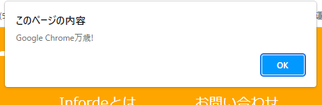

変数・演算
今回のテーマは変数・演算です。どちらも何となく想像できるのではないかなと思います。それなりにボリュームはありますが、すぐに理解できる内容だと思うので頑張ってください。
演算子とは
まず演算子について学びます。その前にJavaScriptでのログ出力のやり方を説明します。ログはWEBブラウザ上でctrl+shift+Iを押すか、メニューの開発者のところの開発者ツールを選ぶか、右クリックしたときに表示される要素を検証を押したときにあらわれる開発者ツールの一番上にタブがあると思うのでそこにあるコンソールをクリックすることで見れます。（コンソールのボタンが見当たらない場合は多分隠れているので>>のボタンを押して表示させるか、開発者ツールの画面を大きくしてください。)エラー情報などはここに出力されます。JavaScriptがうまく動かないときはここを確認してください。
このように書いて、ブラウザで実行すると
console.log('我々は地球人だ')
コンソール上に「我々は地球人だ」と出てきます。内容を変えていろいろ試してみてください。またこのように書くと
alert('Google Chrome万歳!')
Operaブラウザに「Google Chrome万歳!」と言わせることができます。
では本題の演算子に入っていきましょう。演算子とは+-などといった数値を計算するのに使う記号のことです。JavaScriptではこれらを使って計算ができます。例を見てみましょう
console.log(10+5)//足し算は+演算子を使います
console.log(10-5)//引き算は-演算子を使います
console.log(10*5)//掛け算は*演算子を使います
console.log(10/5)//割り算は/演算子を使います
console.log(10**5)//平方の計算は**演算子を使います。（この場合10の5乗）
console.log(10%5)//割り算の余りは%演算子を使います
これを実行するとそれぞれ
>>15
>>5
>>50
>>2
>>100000
>>0
がコンソールに出力されます。計算通りですね。
変数と定数
演算子について理解したところで次は変数と定数についてやっていきましょう。変数とは簡単に言うと値の入った箱のようなものです。この箱の中身は自由に変えることができます。例えばハイジという名前の箱を作り中に812という数字をを入れましょう。この時「ハイジの箱の中身は何ですか？」と聞かれたら812ですよね。そして次に箱の中身を「アルプス」という文字列に入れ替えましょう。すると「ハイジの箱の中身は何ですか？」とまた聞かれたとき答えは「アルプス」になります。これが変数の基本的な考え方です。
では変数を作ってみましょう(≒箱を作る)。変数の定義はvarまたはletまたはconstを使います。もともとはvarだけでしたが途中からletとconstが入りました。現在varは非推奨のためletかconstを使ったほうがいいです。letとconstの違いですが、letは値を変えることができる（≒箱の中身を自由に変えられる）のに対してconstは値を変えることができません。(≒箱の中身を変えられない）
では実際に書いてみましょう。
var a=1
let b=2
const c=3
console.log(a)
console.log(b)
console.log(c)
これを実行すると
>>1
>>2
>>3
キレイに出力されました。
一応意味を確認しておきます。最初のvarやletなどは変数を宣言するよという目印みたいなものです。（とりあえず今はそういう理解でいてください）そしてそこに一つ半角スペースを入れ、変数の名前を書きます。ここにはaとかbとか書いていますがなんでもいいです。例えばmondayとかAppleとかgo_toとか。ただし、だからと言ってなんでもつけていいわけではなく以下のルールに従う必要があります。
1. $と_以外の特殊記号は使うことができない。
2. 予約語を用いることはできない。(let,var,consoleなど)
3. 変数名の先頭に数字をつけてはならない。
この３つのルールがあるので覚えておいてください。
なので例えば１番の例だと!!SAGA!!とか,,,,,みたいな変数名はダメということですね。二番は飛ばして三番は47todouhukennとか777みたいな変数名はダメということです。
結構話がそれましたが変数名を書いた後の=は代入演算子と呼ばれるものです。左側の変数に右側の数値を代入、入れてあげているのですね。
変数の中身を入れ替える時も代入演算子を使います。以下のコードは変数の中身を入れ替える作業が途中に含まれています。
let have='持つ' //変数haveを宣言
console.log(have)
have='食べる' //ここで再代入（入れ替え）している。
console.log(have)
これの結果は
>>持つ
>>食べる
しっかりと中身が入れ替わっていましたね。ちなみにjavascriptでは文字をあらわすときは''または""で囲む必要があります。数字などは囲む必要がありません。またHTMLとCSSと違い大文字小文字の区別があります。そこらへん気を付けてください。
最後に変数同士の演算をさせてみましょう。
let hoge=675
let a=32
let b=10
let piyo=(hoge+a*b)/5
console.log(piyo%6)
これまでちゃんと読んできた皆さんなら、このコードを実行したときに出る値が何かわかりますよね。
答えは1です。
まずは変数piyoに代入されている値を整理してみましょう。hogeは675aは32,bは10なので(hoge+a*b)/5は(675+32*10)/5です。カッコ内を優先的に計算するので675+32*10は32*10は320のため675+320で995。これを5で割ると199です。
よって変数piyoには199が代入されています。そして最後にpiyo%6の答えがログに出力されるので199%6つまり199を6で割った時の余り...つまり1がログに出力されるのです。
これで今回の講座は終わりです。お疲れさまでした。